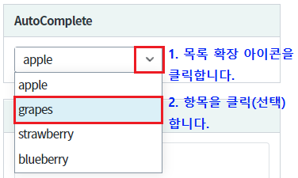
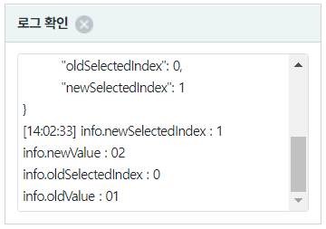
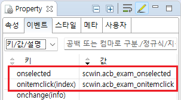
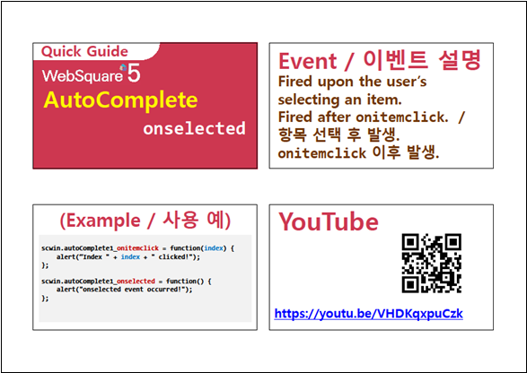

컴포넌트의 이벤트 onselected, onitemclick 의 예제입니다. 이 이벤트들은 검색어 입력창에서 키보드 방향키를 이용해 항목을 선택하거나, 마우스 클릭 또는 스크린 터치를 이용해 항목을 선택했을 때 발생합니다. 두 이벤트 대표적인 차이점은 다음와 같습니다.
항목이 선택하는 시점에 발생합니다. onselected 이벤트 보다 먼저 발생합니다.
이벤트 핸들러에서 index를 받을 수 있습니다.
항목이 선택이 완료된 시점에 발생합니다. onitemclick 이벤트 이후에 발생합니다.
이벤트 핸들러에서 선택 이전의 index, value와 선택 후의 index, value를 받을 수 있습니다.
항목이 선택되었을 때 이벤트 정보 출력하기
컴포넌트의 항목을 선택합니다.
그림 1.브라우저(Chrome) 실행 예시 - 목록 확장 및 선택

로그 확인 영역에 이벤트 정보가 출력됩니다. (브라우저의 개발자 도구의 콘솔(console)탭을 통해 자세한 이벤트 정보를 확인 할 수 있습니다)
그림 2.로그 출력 영역 참고 이미지

컴포넌트의 이벤트 onselected, onitemclick 의 핸들러를 정의합니다. 예제 파일에서는 핸들러로 사용할 함수명을 다음과 같이 정의하였습니다.
onselected : scwin.acb_exam_onselected
선택 항목 목록(itemTable)에서 항목이 클릭된 이후에 발생합니다.
onitemclick : scwin.acb_exam_onitemclick
선택 항목 목록(itemTable) 상에서 항목이 클릭된 경우 발생합니다.
그림 3.웹스퀘어5 SP5 스튜디오의 Property View(속성창)의 이벤트 탭 예시

스크립트 탭에서 핸들러 함수를 정의합니다.
/** * acb_exam 컴포넌트의 이벤트 onselected 핸들러 */ scwin.acb_exam_onselected = function(info) { var _newSelectedIndex = info.newSelectedIndex; //선택된 항목의 index var _newValue = info.newValue; //선택된 값 var _oldSelectedIndex = info.oldSelectedIndex; //이전에 선택된 항목의 index var _oldValue = info.oldValue; //이전 값 //로직 구성 }; /** * acb_exam 컴포넌트의 이벤트 onitemclick 핸들러 */ scwin.acb_exam_onitemclick = function(index) { //로직 구성 };
onitemclick
onselected
[웹스퀘어5 SP5 개발 가이드] AutoComplete
링크 : https://docs1.inswave.com/sp5_user_guide/8df43d1f59fab704#135c147277dd42f3
[웹스퀘어5 SP5 개발 가이드] AutoComplete onselected
링크 : https://docs1.inswave.com/sp5_user_guide/8df43d1f59fab704#bad0b9c1ad8d9ef5
AutoComplete onselected
링크 : https://youtu.be/VHDKqxpuCzk
